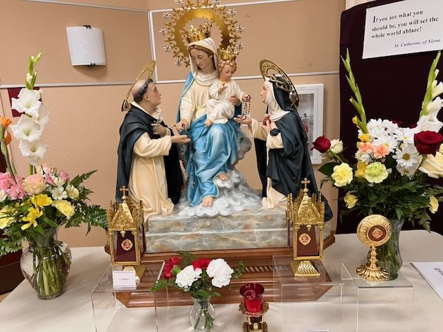

The label is in English
Our Lady of the Rosary altar with a reliquary
On the label
If you are what you should be, you will set the whole world ablaze! — St. Catherine of Siena
In English
If you are what you should be, you will set the whole world ablaze! (Saint Catherine of Siena)
Saints named
A display, not a relic label: a statue of Our Lady and the Child with Saint Dominic and Saint Catherine of Siena, flowers, and a gold monstrance-style reliquary. The sign is a quotation from Catherine of Siena. No relic label is legible.